Git及代码托管平台简明指南
一份关于Git和相关代码托管平台的基本使用说明 :-)
基于reveal.js制作，使用空格或方向键切换，或上下滑动

本作品采用知识共享署名-相同方式共享 4.0 国际许可协议进行许可。
Why Git?
你是否……
牵一发，泰山崩于前，改不回去
你是否……
开发模块，写出几团乱麻，拼不起来
你是否……

分工合作，一盘散沙
That's why you need git !
Git是……
- 免费开源的分布式版本控制软件
- 追踪&控制文件变化
如何安装？
For Windows
https://git-scm.com/download/winFor macOS
https://git-scm.com/download/macFor Linux
可使用各发行版的包管理工具一键安装:-)
pacman -S git
apt-get install git
yum install git
......
Git使用指南
以下命令请在命令行或终端执行 :-)
使用前的一些设置
为了区分每个人对代码的贡献，Git需要知道你是谁
# 设置你的名字git config --global user.name "你的名字"# 设置你的邮箱git config --global user.email "你的邮箱"
从仓库开始
一个项目只有建立了仓库才能使用Git的相关功能。
建立仓库后，仓库内的所有文件都将被Git追踪。
我们先从本地仓库开始 :-)
在当前目录创建仓库
git init执行后，目录内会多出一个.git文件夹，这是仓库的文件，不要修改它
克隆一个已有的仓库
也可以复制一个已有的仓库，新仓库保留原仓库的所有文件和记录
git clone /path/to/repo工作流
仓库内容由三部分构成：
- 工作目录：目录内的实际文件
- 暂存区：已缓存的内容改动
- 版本库：每次提交时项目的快照
增删或修改文件后，先将文件添加到暂存区，再提交至版本库
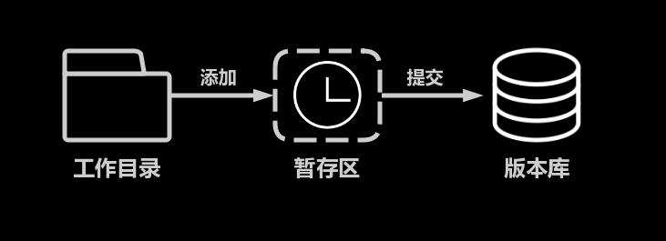文件被修改，Git能够自动发现文件的变化
查看当前仓库的状态：
git status仓库内增删或修改文件之后，可以将其添加到暂存区：
git add 文件名这样，文件的当前版本就被备份到了暂存区
如果想一次性暂存所有文件，也可以一行完成 :-)
git add -A如此，当操作失误文件被改得面目全非，就可以恢复：
git checkout 文件名这会从暂存区的备份中恢复你的文件
如果暂存区中没有，则会从版本库最后一次提交中恢复文件
如果整个项目被改成了一团乱麻 :-(，可以回退到最后一次提交的状态：
git reset --hard HEAD所有修改将被重置，新文件不会被删除，而是回到未追踪的状态
使用需慎重：从最后一次提交之后的所有修改都将被清除!
当阶段性工作完成，就可以将暂存区的所有改动提交至版本库，形成新版本：
git commit -m "这次都改了些啥"查看历史提交记录：
git log忽略文件
有时我们不希望将工作目录内的一些文件纳入仓库，例如临时文件等
那么，可以在工作目录的根目录添加一个.gitignore文件，告诉Git要忽略哪些文件
将希望忽略的文件和目录的相对位置加入.gitignore即可，一行一个，支持通配符*
如果文件和目录尚未在版本库和暂存区内出现过，则Git将不再追踪这些文件
分支管理
Git不只是代码备份工具，通过版本的分支控制，
还可以很好地支持开发的并行推进
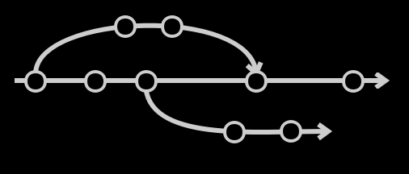创建一个分支
假设你要为项目开发一个新功能，或要修复一个BUG，
但你不希望因此影响项目主体的推进，
那么，你可以为新功能的开发创建一个新的分支：
git branch 新分支名这样，你就从当前版本创建了一个新的分支，接下来，切换到新分支：
git checkout 分支名新分支上的所有修改都不会影响原分支，请放心开发 :-)
切换分支
查看仓库内所有分支以及当前分支：
git branch分支的切换可以使用如下命令：
git checkout 分支名仓库初始化时的默认分支是 master，通常作为项目的主分支
切换分支前请先提交保存当前分支的修改
合并分支
当新特性开发完成后，就可以将其合并入主分支了
要合并分支，请在提交修改后，执行：
git merge 其他分支这会将其他分支的修改合并到当前分支下
要将修改合并入主分支，切换到主分支下，执行该命令即可
合并分支时，Git会自动尝试合并改动，
但总有些时候，有些冲突并不能自动解决，
此时，你会收到提示，
在手动解决冲突后，添加改动到暂存区并提交合并后的新版本即可
怎样利用分支功能
一种使用套路是开发新功能时建立新分支，完成后合并入主分支
还有一种套路是设立latest分支对应最新的开发进度，
确保无误后再合并入更稳定的主分支
还可以为不同的开发者设立不同的分支，每人负责自己的分支，由管理员负责合并
（这种方式在代码托管平台上有更好的机制解决）
……
当一个分支的使命完成之后，可以删除它：
git branch -b 分支名远程仓库
Git是一个分布式版本控制软件，每个本地仓库都可以与多个远程仓库保持同步
本地仓库是远程仓库的完整镜像，可以独立存在，可以任意指定远程仓库
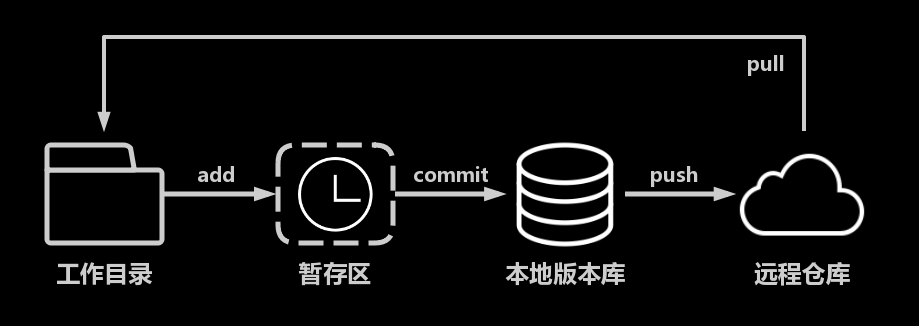使用远程仓库前的准备工作
（如果你的远程仓库是基于HTTPS的，可略过此步）
通常，Git使用SSH与远程服务器进行通信，
这需要你的电脑生成一对SSH key用于加密通信：
ssh-keygen -t rsa -C "你的名字或邮箱"
这会在你的用户目录里生成一个.ssh的文件夹，里面有一个公钥和一个私钥
将公钥（id_rsa.pub中的内容）添加到远程服务器中
（如果你使用了代码托管平台，将其添加到你的个人账号的SSH key中）
克隆远程仓库…
同克隆本地仓库一样，只不过地址是远程地址
# 克隆基于SSH的仓库（需要SSH Key）git clone user@host.com:path/to/repo.git# 克隆基于HTTPS的仓库git clone https://host.com/path/to/repo.git
或者在已有仓库添加远程仓库的关联
git add remote 远程仓库名 远程仓库地址远程仓库名
对于直接克隆的远程仓库，默认的仓库名为origin
如果是手动添加的远程仓库，则可以任意指定仓库名
与远程仓库保持同步
从远程仓库抓取最新内容：
git pull 远程仓库名 分支名与合并分支一样，同样可能需要手动处理内容冲突
将提交同步至远程仓库
提交自己的工作到本地仓库后，可将修改推送到远程仓库：
git push 远程仓库名 分支名只有推送到远程仓库的分支才对别人可见
另外，推送时本地仓库的提交可能与远程仓库不一致，导致推送失败
例如远程仓库有本地仓库未抓取的更新版本的提交，
因此建议在推送之前先抓取最新内容，确保最新后再提交
（另有强制推送办法，但强烈不推荐，因为会破坏远程仓库）
复习一下：
- 使用
init或clone创建仓库或从本地或远程仓库克隆 - 使用
add添加文件到暂存区，使用commit提交 - 编写
.gitignore忽略不想要包含进仓库的文件 - 使用
branch创建分支，使用checkout切换分支 - 使用
remote add添加与远程仓库的关联 - 使用
pull获取远程仓库最新内容，使用push提交本地最新内容
那么，去哪里搞远程仓库呢？
你可以……
敏感项目或局域网环境，你可以架设Git服务器
其他情况，你可以考虑使用：
代码托管平台
在代码托管平台上，你可以……
- 使用远程仓库
- 优雅地进行协作
- 维护软件的发行版
- 提供软件的文档
- 分享代码，听取反馈
- 查找优秀项目
在代码托管平台上，你还可以……
- 参与开源项目
- 搭建个人网站
- 备份资料
- 用作论坛
- Star多了可以找工作
- ……
改页内容超纲，请自行学习 :-)
有哪些靠谱的代码托管平台？
主要功能点有：
- Git仓库
- Release
- Watch & Star & Fork
- Pull Request
- Issue
- Wiki
下面将以Github为例
使用前的准备工作
通常，这些平台的远程仓库有两种同步方法：
- 基于HTTPS，可以随意pull，每次push需要输入用户名和密码
- 基于SSH，需要提供公钥，否则无法同步
如果选择SSH方式，请按照前面章节的方法生成SSH Key，并将公钥添加到你在代码托管平台的个人账户里，通常，这在你的个人设置里面可以找到
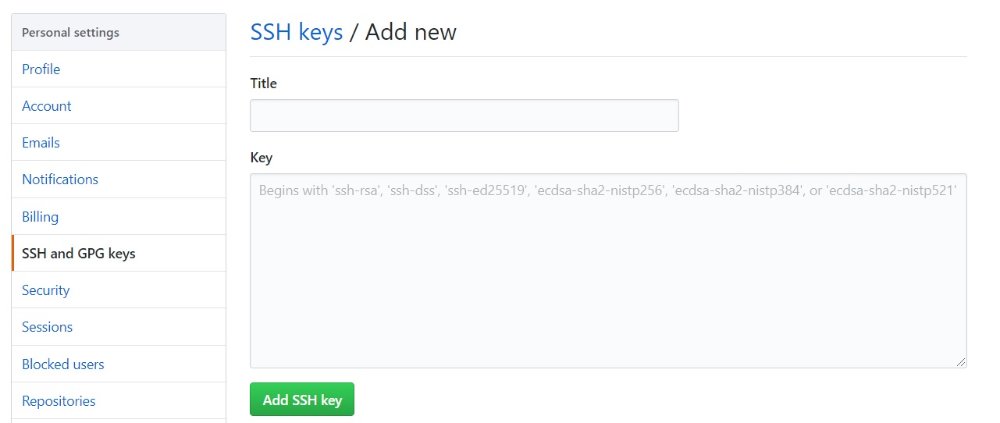Title随便写，Key是你的公钥
这个公钥将被用来确认你的身份
使用代码托管平台的Git仓库
打开一个项目，你可以随意浏览代码
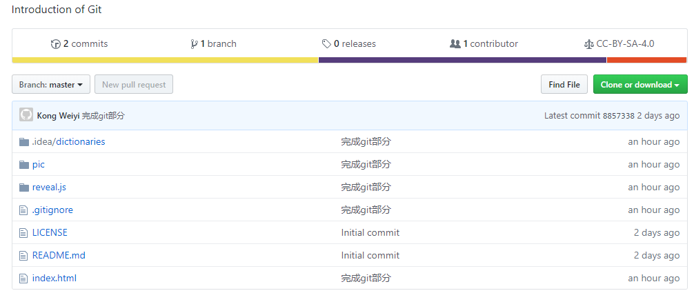你可以随意切换分支
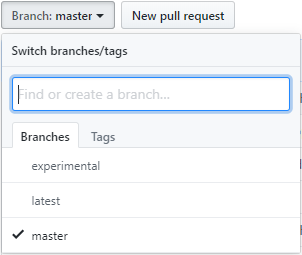还可以查看当前分支下的各次提交的版本
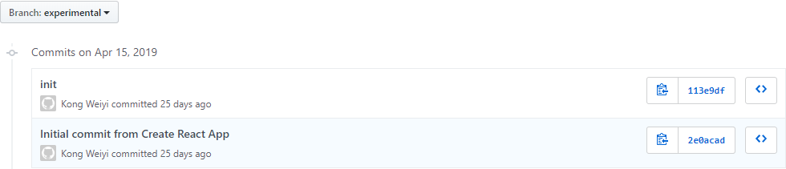你可以在“Clone or download”之类的地方找到项目的地址
HTTPS和SSH的地址都有，这个地址可以用于远程仓库的操作
你还可以打包下载当前版本的代码文件
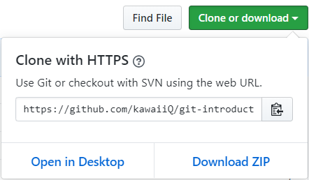Release
阶段性开发完成，想要发布正式版？
想要方便大众，发布可直接运行的软件？
去Releases里发布一下吧
（当然，你也可以去别人的项目里做个伸手党 →_→）
Watch
随时关注项目的最新动态
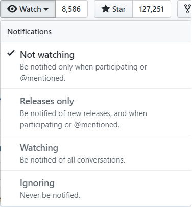Star
喜欢的话，点个赞再走 :-)
Push的权限
你可以Push的仓库有：
- 你自己账户下仓库
- 持有者将你设为Collaborator的仓库
Fork
想要修改别人的项目却无权Push？Fork一份到自己的账号下
Fork后，仓库将会被克隆一份到你的账户下
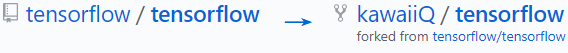Pull Request
给Fork的项目加了个新功能，想要回馈原项目？
发起Pull Request !
开发者同意并合并代码后，
你的代码将贡献给原项目 (๑•̀ㅂ•́)و✧
Pull Request工作流
这也是在代码托管平台上合作开发的常见模式
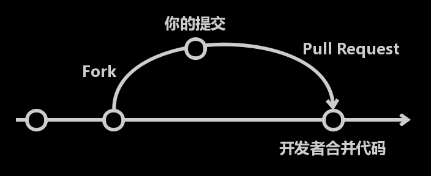Wiki
对代码 & 功能有疑问？想看看文档？
去Wiki里看看吧
Issue
看了，还是有疑问？
开发者很懒，什么都没留下？
去Issues里看看吧
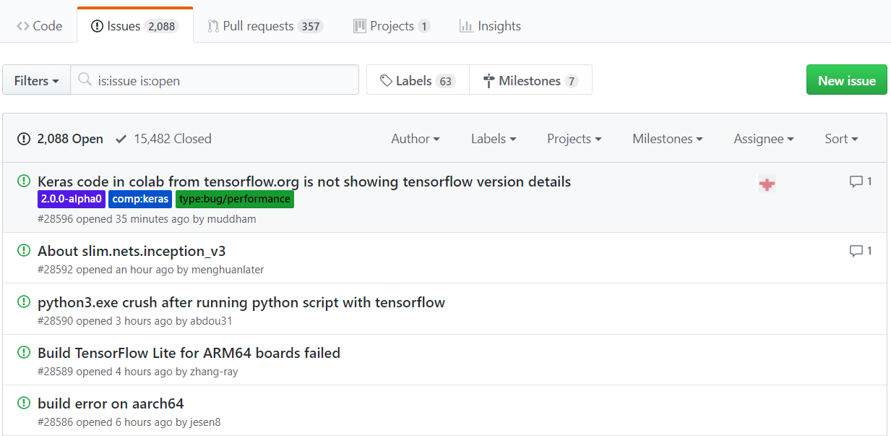Issues里包含了大家对于项目的疑问，或者对于Bug的反馈
没有看到自己遇到的问题？
提交一个Issue吧
如何找到一份靠谱的项目？
一份好项目的特征：
- 很多star，说明很多人喜欢
- 很多fork，说明很多人都在研究
- 很多issue，说明社区十分活跃
总结一下
- 使用代码托管平台提供的远程仓库
- 使用Release发布软件
- 使用Watch关注软件
- 使用Star表示你的喜爱
- 使用Fork & Pull Request为项目作贡献
- 使用Wiki编写文档
- 使用Issue和开发者及用户交流
还有一件事：遵守开源协议
开源 ≠ 拿来随便用
想集成或修改源码，你需要遵守开发者的规则
通常，开源协议位于项目根目录的LICENCE文件中
那么，需要遵守些什么呢？
以下内容总结于选择一个开源软件协议
通常，你可以……
- 商用：你可以将软件和衍生产品用于商用
- 分发：你可以分发该软件
- 修改：你可以修改软件或源代码
- 私用：自己拿来用
通常，你需要……
- 版权说明：你明确地放置许可协议和版权信息
（有极个别特殊协议无需版权说明）
通常，你不可以……
- 追责：遇到任何问题，原作者不承担任何责任
这些事项依协议而各异：
- 专利授权：你可否对修改内容申请专利
- 公开源码：你是否需要公开自己的全部源代码
- 相同协议：你的软件是否需要使用与原软件相同的协议进行发布
- 声明变更：你是否需要提供文档说明你对原软件的修改之处
- 使用商标：你是否可以使用原软件的商标（通常不能，即便没有说明）
常见协议
更多开源协议，参见附录 - Choose a License
MIT License
简短而宽松的协议，只提供了版权保护和声明，
你只需要在自己的软件中放置一份原作的LICENSE即可
- 你可以：商用、分发、修改、私用
- 你需要：版权说明，放置原作版权说明
- 你不能：追责
GNU GPLv3
GPL传染：当你的软件中使用了任何GPL软件的模块，
那么你必须同样基于GPL协议开源。
- 你可以：商用、分发、修改、私用、专利授权
- 你需要：公开源码、版权说明、相同协议、声明变更
- 你不能：追责
升级版1：GNU AGPLv3
在GPL协议的基础上弥补了GPL关于软件分发在网络方面的漏洞，
AGPL协议添加了网络分发的要求，
规定用户必须可以获取软件源代码，从而避免以网络服务的形式规避开源。
- 你可以：商用、分发、修改、私用、专利授权
- 你需要：公开源码、版权说明、相同协议、网络分发、声明变更
- 你不能：追责
升级版2：GNU LGPLv3
宽松版的GPL协议
GPL要求只要包含GPL软件即需公开源码，
LGPL则将要求放宽，只有对原软件修改或二次开发才需要公开源码，
如果只是连接和调用LGPL的软件，则无需公开
- 你可以：商用、分发、修改、私用、专利授权
- 你需要：公开源码、版权说明、相同协议、声明变更
- 你不能：追责
Apache License
一份提供了版权保护和许可声明的宽松的协议，本协议授权使用者专利使用权，使用时需注明作者，如有修改，需注明修改部分内容。请注意，本协议不授予商标使用权
- 你可以：商用、分发、修改、私用、专利授权
- 你需要：版权说明、声明变更
- 你不能：追责、使用商标
The Unlicense
没有任何附加要求，作品可以在不同的条件下无需源码地分发。
- 你可以：商用、分发、修改、私用
- 你不能：追责
小心那些没有提供协议的项目！
没有许可证，将默认使用版权保护法，
这意味着保留所有权力，不允许任何人复制，分发或创建衍生作品
以上就是Git和代码托管平台的基本使用方法了
使用愉快 :-)
一些推荐的资料
本作品GitHub地址
https://github.com/kawaiiq/git-introduction使用Github Pages（IPv6）和Coding Pages（IPv4）发布
欢迎Star & Fork :-)